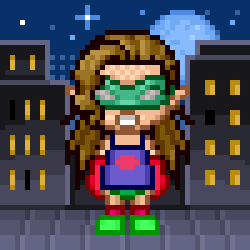
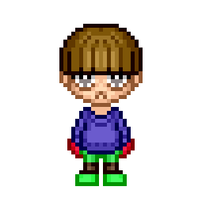
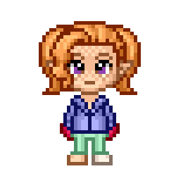
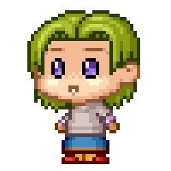

A Code Journal for
Hub Pages
View the Code Journal on GitHub
Repositories and latest Contribution Activity
A Code Journal for
Hub Pages
View the Code Journal on GitHub
Last updated on April 11th, 2019

This Bot conducts conversations via auditory or textual methods to convincingly simulate how a human would behave as a conversational partner, thereby passing the practical purposes including customer service or information acquisition. The experiment is to make a conversational AI to use the gaming messaging apps and speech based assistants to automate communication and personalize customer experiences.
Bots can be classified into usage categories such as conversational commerce (e-commerce via chat), analytics, communication, customer support, design, developer tools, education, entertainment, finance, food, games, health, HR, marketing, news, personal, productivity, shopping, social, sports, travel and utilities. experiment
React Frontend and Express Backend
See package.json// package.json
{ ...
"dependencies": {
"@mixer/client-node": "^3.3.1",
"chalk": "2.4.2",
"common-tags": "1.8.0",
"cookie-parser": "~1.4.3",
"debug": "~2.6.9",
"discord.js": "11.4.2",
"ejs": "~2.5.7",
"eslint": "5.15.1",
"express": "~4.16.0",
"googleapis": "^27.0.0",
"http-errors": "~1.6.2",
"libsodium-wrappers": "0.7.4",
"moment": "2.24.0",
"morgan": "~1.9.0",
"ms": "2.1.1",
"opusscript": "0.0.6 ",
"tmi.js": "1.4.2",
"winston": "3.2.1",
"ws": "^6.2.0"
}
...
}
// app.js
const createError = require('http-errors');
const express = require('express');
const tmi = require('tmi.js');// tmi.js module
const path = require('path');
const cookieParser = require('cookie-parser');
const logger = require('morgan');
const Discord = require('discord.js');// discord.js module
const Mixer = require('@mixer/client-node');// mixer module
const ws = require('ws');
const http = require('http');
const fs = require('fs');
const readline = require('readline');
const {google} = require('googleapis');
const Carina = require('carina').Carina;
const hostname = '127.0.0.1';
const port = 3000;
...
OAuth is an open standard for access delegation, commonly used as a way for Internet users to grant websites or applications access to their information on other websites but without giving them the passwords.
See oauth.js// oauth.js
...
// This is the client ID and client secret that you obtained
// while registering the application
const clientID = ''
const clientSecret = ''
const app = express();
// Declare the redirect route
app.get('/oauth/redirect', (req, res) => {
// The req.query object has the query params that
// were sent to this route. We want the `code` param
const requestToken = req.query.code;
someThingsomeThing({
// make a POST request
method: 'post',
// to the Github authentication API, with the client ID,
// client secret and request token
url: `https://somewhere.com/login/oauth/access_token
?client_id=
${clientID}&client_secret=
${clientSecret}&code=
${requestToken}`,
// Set the content type header, so that we get the
// response in JSOn
headers: {
accept: 'application/json'
}
}).then((response) => {
// Once we get the response, extract the access token from
// the response body
const accessToken = response.data.access_token
// redirect the user to the welcome page, along with the
// access token
res.redirect(`/welcome.html?access_token=${accessToken}`);
})
})
...
 FTL (Faster Than Light) Technology with other platforms leave you waiting 2-5 seconds, our streaming protocol delivers content with less than one second of latency.
Interactivity is the cornerstone of everything we offer. From selecting built-in soundboards and visual elements, to 4-player co-streams, viewers can interact with their favorite streamers in ways that are deeper, more personal, and (most importantly) more fun.
Mixer makes it easy to start streaming your gameplay. In just a couple of clicks, you can easily start broadcasting on Windows 10 or Xbox One – no extra software required.
The first built-in cooperative streaming experience on a streaming platform where up to 4 streamers can combine their streams into a single viewer experience. With up to three other friends, you can launch a stream with separate stream sources in one shared Mixer page and one centralized chat
See mixer-bot
// With OAuth we don't need to log in, the OAuth
// Provider will attach the required information
// to all requests after this call.
// Get the user that the Access Token provided
// belongs to.
client.request('GET', 'users/current')
.then(response => {
userInfo = response.body;
return new
Mixer.ChatService(client).join(response.body.channel.id);
})
.then(response => {
const body = response.body;
return createChatSocket(userInfo.id,
userInfo.channel.id,
body.endpoints,
body.authkey);
})
.catch(error => {
console.error('Something went wrong with Mixer.');
console.error(error);
});
/**
* Creates a Mixer chat socket and sets up listeners to
* various chat events.
*/
function createChatSocket (userId,
channelId,
endpoints,
authkey) {
// Chat connection
const socket = new Mixer.Socket(ws, endpoints).boot();
// Greet a joined user
socket.on('UserJoin', data => {
console.log('${data.username} has joined');
socket.call('msg',
[`Hi ${data.username}! I'm chibibot! Write
!commands to see what I can do!`]);
});
// React to our !chibielf command
socket.on('ChatMessage', data => {
if (data.message.message[0].
data.toLowerCase().startsWith('!chibielf')) {
socket.call('msg', [`Hi @${data.user_name}
and welcome to the stream!`]);
console.log(`Welcomed ${data.user_name}`);
}
});
...
// Handle errors
socket.on('error', error => {
console.error('Socket error');
console.error(error);
});
return socket.auth(channelId, userId, authkey)
.then(() => {
console.log('Login to Mixer successful');
return socket.call('msg',
['Hi! I\'m chibielf! Write !chibielf and
I will say hi back to you!']);
});
}
Feb 28, 2019 5:40:24 AM "BUILD SUCCESSFUL (total time: 0)"
Mixer Commands, the application Model, console logging, and Settings
Provide conversational AI to use the gaming messaging apps and speech based assistants to automate communication and personalize customer experiences for Mixer channel under a varying amount of resources and priorities
Mixer Mixplay, Core, and Chat API
 Discord is a proprietary freeware VoIP application and digital distribution platform designed for video gaming communities, that specializes in text, image, video and audio communication between users in a chat channel with over 200 million unique users of the software.
Players love to show off what they are playing with Discord’s status feature. With Rich Presence you can add beautiful art and detailed information to show off your game even more. This lets players know what their friends are doing, so they can decide to ask to join in and play together.
Discord// Discord
...
// when the client is ready, run this code
// this event will only trigger one time after logging in
client.on ('ready', () => {
console.log("Conected as " + client.user.tag + " Ready!");
client.on('message', message => {
// send back "Welecome to my Discord Server!" to the channel
// the message was sent in
if (message.content === '!chibielf') {
message.channel.send('Hi! I\'m Chibielf! Welcome to
the Discord Server!');
}
});
// client.user.setActivity
client.user.setActivity("Live Youtube", {type: "WATCHING"});
// CHANNEL
client.guilds.forEach((guild) => {
console.log(guild.name);
guild.channels.forEach((channel) => {
console.log(` - ${channel.name}
${channel.type}
${channel.id}`);
});
});
// For General Channel id 398581574427213826
// @generalTextChannel and @generalVoiceChannel
let generalChannel =
client.channels.get("398581574427213826");
const attachment =
new Discord.Attachment
("../assets/img/avatar.png");
generalChannel.send(attachment);
});
// MESSAGE
client.on('message', (receivedMessage) => {
if (receivedMessage.author === client.user) {
return;
}
// REPEAT MESSAGE
receivedMessage.channel.send("Message received : " +
receivedMessage.author.toString() + " : " +
receivedMessage.content);
receivedMessage.guild.emojis.forEach(customEmoji => {
console.log(`${customEmoji.name} ${customEmoji.id}`);
receivedMessage.react(customEmoji);
});
});
client.on('message', message => {
if (!message.content.startsWith(prefix) ||
message.author.bot) return;
const args =
message.content.slice(prefix.length).split(/ +/);
const command = args.shift().toLowerCase();
// INFO
if (command === 'info') {
if (!args.length) {
return message.channel.send
(`You did not provide any arguments,
${message.author}!`);
} else if (args[0] === 'foo') {
return message.channel.send('bar');
}
message.channel.send(`First argument: ${args[0]}`);
...
});
// login to Discord with app token
client.login(token);
Feb 28, 2019 5:40:24 AM "BUILD SUCCESSFUL (total time: 0)"
Discord API offerings for both bots and OAuth2 integrations for making !wumpus commands and log In With Discord.
Provide the best satisfying solution under a varying amount of resources and priorities
Voice connections operate in a similar fashion to the Gateway connection. However, they use a different set of payloads and a separate UDP-based connection for voice data transmission.
 Twitch Gaming Solutions provides developers products and solutions that extend the lifecycle of entertainment beyond the screen.
Twitch Extensions enable you to create live apps that interact with the stream, as a panel on a channel, or with chat. Create interactive experiences such as mini-games, leaderboards, live gear information and more.
Twitch Insights enable registering your games to access free insights about your streamers, viewers, and performance on Twitch.
Twitch API enables applications to work with clips, games, streams and users.
See twitch-bot// TWITCH
// Define configuration options
let options = {
options: {
debug: true
},
connection: {
reconnect: true,
secure: true
},
identity: {
username: "User-Name",
password: "oauth:token XXX.xxx.XXX"
},
channels: [ "Channel 123" ]
// logger: Object - Custom logger with the methods
// info, warn, and error
};
// Create a client with our options
let client = new tmi.client(options);
// Register our event handlers (defined below)
client.on('message', onMessageHandler);
client.on('connected', onConnectedHandler);
// Connect to Twitch..
client.connect();
client.on('connected', (address, port) => {
client.action('User-Name-Bob',
'Hello, the bot is now connected');
});
// Called every time a message comes in
function onMessageHandler (target, context, msg, self) {
if (self) { return; } // Ignore messages from the bot
// Remove whitespace from chat message
const commandName = msg.trim();
// If the command is known, let's execute it
if (commandName === '!dice') {
const num = rollDice();
client.say(target, `You rolled a ${num}`);
console.log(`* Executed ${commandName} command`);
} else {
console.log(`* Unknown command ${commandName}`);
}
}
// Function called when the "dice" command is issued
function rollDice () {
const sides = 6;
return Math.floor(Math.random() * sides) + 1;
}
// Called every time the bot connects to Twitch chat
function onConnectedHandler (addr, port) {
console.log(`* Connected to ${addr}:${port}`);
}
Feb 28, 2019 5:40:24 AM "BUILD SUCCESSFUL (total time: 0)"
Twitch Extensions, Marketplace, Insights, Game Solutions, and the API.
Provide the best satisfying solution under a varying amount of resources and priorities.
Twitch clips, games, streams, and users API References.
Integrate YouTube videos and functionality into your website or application.
YouTube Analytics and Reporting APIs allow you retrieve YouTube Analytics data for YouTube videos and channels.
YouTube Data API lets your application retrieve YouTube content while also enabling YouTube users to manage their YouTube accounts.
YouTube for Android adds YouTube functionality to your Android apps.
YouTube IFrame Player API embeds a YouTube player in your application.
YouTube Live Streaming API allows you to create, update, and manage live events on YouTube.
YouTube Subscribe Button enables users to subscribe to your channel with one click.
See youtube-bot// Sample code for youtube
...
// If modifying these scopes, delete token.json.
const SCOPES =
['https://www.googleapis.com/auth/drive.metadata.readonly'];
// The file token.json stores the user's access and refresh
// tokens, and is created automatically when the authorization
// flow completes for the first time.
const TOKEN_PATH = 'token.json';
// Load client secrets from a local file.
fs.readFile('credentials.json', (err, content) => {
if (err) return
console.log('Error loading client secret file:',
err);
// Authorize a client with credentials, then call the
// Google Drive API.
authorize(JSON.parse(content), listFiles);
});
/**
* Create an OAuth2 client with the given credentials, and
* then execute the given callback function.
* @param {Object} credentials The authorization client
* credentials.
* @param {function} callback The callback to call with
* the authorized client.
*/
function authorize(credentials, callback) {
const {client_secret, client_id, redirect_uris} =
credentials.installed;
const oAuth2Client = new google.auth.OAuth2(
client_id, client_secret, redirect_uris[0]);
// Check if we have previously stored a token.
fs.readFile(TOKEN_PATH, (err, token) => {
if (err) return getAccessToken(oAuth2Client, callback);
oAuth2Client.setCredentials(JSON.parse(token));
callback(oAuth2Client);
});
}
/**
* Get and store new token after prompting for user
* authorization, and then execute the given callback
* with the authorized OAuth2 client.
* @param {google.auth.OAuth2} oAuth2Client The OAuth2
* client to get token for.
* @param {getEventsCallback} callback The callback for
* the authorized client.
*/
function getAccessToken(oAuth2Client, callback) {
const authUrl = oAuth2Client.generateAuthUrl({
access_type: 'offline',
scope: SCOPES,
});
console.log('Authorize this app by visiting this url:',
authUrl);
const rl = readline.createInterface({
input: process.stdin,
output: process.stdout,
});
rl.question('Enter the code from that page here: ',
(code) => {
rl.close();
oAuth2Client.getToken(code, (err, token) => {
if (err) return
console.error('Error retrieving access token',
err);
oAuth2Client.setCredentials(token);
// Store the token to disk for later program executions
fs.writeFile(TOKEN_PATH, JSON.stringify(token),
(err) => {
if (err) return console.error(err);
console.log('Token stored to', TOKEN_PATH);
});
callback(oAuth2Client);
});
});
}
/**
* Lists the names and IDs of up to 10 files.
* @param {google.auth.OAuth2} auth An authorized OAuth2
* client.
*/
function listFiles(auth) {
const drive = google.drive({version: 'v3', auth});
drive.files.list({
pageSize: 10,
fields: 'nextPageToken, files(id, name)',
}, (err, res) => {
if (err) return console.log('The API returned an error: '
+ err);
const files = res.data.files;
if (files.length) {
console.log('Files:');
files.map((file) => {
console.log(`${file.name} (${file.id})`);
});
} else {
console.log('No files found.');
}
});
}
...
Feb 28, 2019 5:40:24 AM "BUILD SUCCESSFUL (total time: 0)"
Playing videos, adding data, live streaming, analytics and reporting, subscribe buttons
Provide the best satisfying solution under a varying amount of resources and priorities
Youtube resources are vast and cover everything from API, widgets and tools, analytics, data, Android and IOS resources.